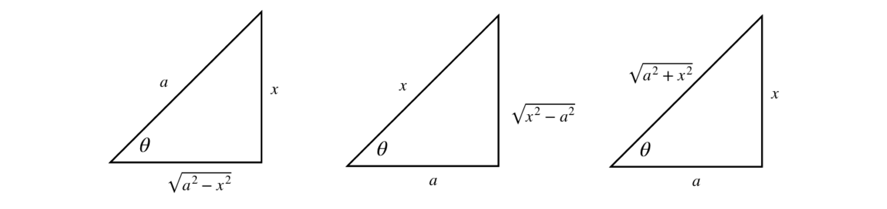
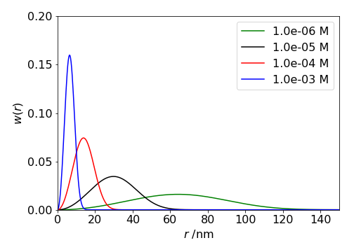

3 Integration by substitution and ‘by parts’. Differentiation and the Leibniz formula. Feynman’s ‘Trick’
Contents
%matplotlib inline
import numpy as np
import matplotlib.pyplot as plt
from sympy import *
init_printing() # allows printing of SymPy results in typeset maths format
plt.rcParams.update({'font.size': 16}) # set font size for plots
3 Integration by substitution and ‘by parts’. Differentiation and the Leibniz formula. Feynman’s ‘Trick’#
3.1 Clever substitution can help to solve an integral#
It may appear at first that if an integral is not in a standard form then it cannot be solved - not so! The purpose of substitution is to convert the integral into a standard and therefore simpler form whose solution is known. Choosing a substitution is rather an art and some trial and error is usually required. However, just as in football, a clever substitution can produce the required result.
There are three parts to the method, which will be illustrated with \(\displaystyle\int \sin^2(x)\cos(x)dx\).
\(\quad\)(1) Change a complex expression in \(x\) into a simpler one in another variable \(u\) by a substitution,
\(\qquad\) For example, \(\sin^2(x)\cos(x)\) is simplified with \(u = \cos(x)\) to \((1 - u^2)u\).
\(\quad\)(2) Workout \(dx\) as an expression in \(du\). In our example, \(du=-\sin(x)dx\).
\(\quad\)(3) Change all limits to the new variable.
The usage of \(du\) and \(dx\) as independent entities in themselves in step (2) appears to be different to that of \(du/dx\), which has previously been used as a ratio. However, it is quite permissible to use \(du\) and \(dx\) and so forth on their own, provided their ratio could still be made by rearranging the equation.
As a rule of thumb with complicated sine and cosine expressions, try sine and cosine substitutions. If you are lucky, your first guess may be the correct one; if not, try again.
Start by guessing that the substitution \(u = \cos(x)\) might work, therefore \(\displaystyle \frac{du}{dx}=-\sin(x)\) or \(dx=-du/\sin(x)\). Next substituting for \(\cos(x)\) and \(dx\) gives
and in the last step \(\cos^2(x) + \sin^2(x) = 1\) was used. Notice that no integration has yet been performed, just the substitutions. However, this last integral looks as if it might be possible but it is still a bit complicated, so instead of persevering it is easier to try again and see if a better result is possible. You can always return to this result if necessary. As a second try, substitute \(u = \sin(x)\) and then \(du = \cos(x)dx\) and this turns out to be far simpler:
Using the right-angled triangle it is possible to substitute trigonometric functions for algebraic ones and vice versa. The triangles and their corresponding trig relationships are shown in table 1.
Consider the integral \(\displaystyle \int \frac{x^2}{\sqrt{4-x^2}}dx\). The substitution \(\tan(\theta)=x/\sqrt{a^2-x^2}\) with \(a=2\) is appealing. However, when differentiated to substitute \(d\theta\) for \(dx\) it produces a horrible result. Trying \(\cos(\theta)=\sqrt{ 2^2-x^2}/2\) instead proves to be a good starting place because when differentiated \(d\theta\) produces a reciprocal square root that cancels with that in the integral. Differentiating gives \(2\sin(\theta)d\theta = x/\sqrt{4 - x^2}dx\) changing the integral into
This is now a standard form and can be converted to an exponential form (or looked up in Section 4.2.13) and then converted back to \(x\) using trig functions.
3.2 Table 1 Trig formulas#

3.3 Definite integrals with substitution#
When calculating a definite integral first evaluate the indefinite integral and then using the limits, work out the final value. If a substitution is made it is also necessary to change the limits, thus making it unnecessary to reverse the substitution to obtain the result.
(i) Reciprocal functions#
Suppose the integral is \(\displaystyle \int_2^8 \frac{3}{(1+2x)^3}dx\), trying the substitution \(u = 1 + 2x\) seems an obvious choice and therefore \(dx = du/2\). The limits are \(x = 2\) and 8, which become \(u = 5\) and \(17\) in the new variable, making the integral
Alternatively, calculate the integral leaving out the limits to begin with, then convert back to \(x\) and then use the original limits;
(ii) Integrals of the Gaussian type#
often occur in quantum problems. The solution to the simpler integral is
and with a substitution we can solve the more complex integral.
The first step is to ‘complete the square’ which means converting \(-ax^2/2+bx\) into a quadratic. A general quadratic is \(ax^2+bx+c\) and this is changed to \(a(x-h)^2+k\) where \(h=-b/a, k=c-b^2/4a\).
In our example \(\displaystyle \frac{-a}{2}x^2+bx \to -\frac{a}{2}\left(x-\frac{b}{a}\right)^2+\frac{b^2}{2a}\), which means the integral becomes
which is a little simpler and now allows us to make a substitution such as \(z=x-b/a, dz=dx\) and so
(iii) Integrals as products and ratios of sines and cosines \(\int \cos^n(\theta)\sin^m(\theta)d\theta\)#
The integral \(\int \cos^n(\theta)\sin^m(\theta)d\theta \) can be found when \(n\) or \(m\) or both is an odd number. If the index of the sine is odd let \(x=\cos(\theta)\), if the index of cosine is odd let \(x=\sin(\theta)\). If \(n+m\) is a negative even integer then the integral can also be found. This was illustrated above. When \(n\) and \(m\) are both even the integral becomes very difficult and then using computer algebra is by far the quickest way to arrive at at solution.
(1) \(\int \cos^n(\theta)\sin(\theta)d\theta\) can be solved with the substitution \(x=\cos(\theta)\)#
The integrals \(\int \cos^n(\theta)\sin(\theta)d\theta\) can be solved with the substitution \(x=\cos(\theta)\) and so \(dx=-\sin(\theta)d\theta\),
where \(n\) is a positive integer and \(c\) a constant. With the definite integral
the range can be found using \(\theta=0, x=1,\; \theta=\pi, x=-1\) or by substituting for \(x\) directly either way
making all the integrals zero for odd \(n\).
(2) Integrals such as \(\displaystyle \int \cos^4(\theta)\sin^3(\theta)d\theta \)#
Again let \(x=\cos(\theta)\) then
Use \(\sin^2(\theta)=1-\cos^2(\theta)\) to make the integral
(3) Ratios of sine and cosine, e.g. \(\displaystyle \int \frac{\cos^3(\theta)}{\sin^2(\theta)}d\theta\)#
With the substitution \(x=\sin(\theta), dx=\cos(\theta)d\theta\) the integral becomes
(iv) The general integral \(\int \cos^n(\theta)\sin^m(\theta)d\theta \)#
The general integral \(\int \cos^n(\theta)\sin^m(\theta)d\theta \) is hard to integrate whe the conditions given above do not apply, but can be done by iteration which means finding a reduction formula. The method is to start with another related function, differentiate it then integrate the result. The integral we require will then appear in terms of a new function and a new integral that can usually be solved easily. If this is not the case then the process can be repeated until a solvable integral appears.
Start by differentiating
where to get to the second step involves several manipulations. Integrating we get \(\cos^{n-1}(\theta)\sin^{m+1}(\theta)\) and rearranging produces
As an example, let the rather tricky integral be \(\displaystyle \int \cos^2(\theta)\sin^2(\theta)d\theta\) in this case \(m=n=2\) and so the solution is
and the remaining integral is given above as \(\displaystyle \frac{1}{2}(\theta -\sin(\theta)\cos(\theta))\) and using identities for \(\sin(2\theta)\) and \(\cos(2\theta)\) and after some manipulation gives
If the integral was \(\displaystyle \int \cos^4(\theta)\sin^2(\theta)d\theta\) then we would find that we needed the integral \(\displaystyle \int \cos^2(\theta)\sin^2(\theta)d\theta\) which we have just found.
4 Three useful results with a function and its derivative#
Integrals where the function in the numerator is the derivative of the function in the denominator, evaluate to logs. For example,
where \(f'(x)\) is the derivative of \(f\) and \(c\) is the constant of integration. The symbols \(| \;|\) indicate that the absolute value of the function must be taken because the log of a negative number is not permissible.
This result can be demonstrated by substitution of \(u = f(x)\) then \(du = f '(x)dx\) into equation 12 giving
and this result is not surprising when recalling the differential of \(\ln( f (x))\). A second example is
The cosine is the derivative of the sine, and the absolute value is taken because the sine is negative for some values of \(x\).
Related to equation 12 is the integral
and this can be verified by letting \(f (x) = u\) and differentiating \(f (x) + c\). Try this and then integrate both sides of the equation.
The third equation involves a function and its derivative and is the product,
Notice that the function is written first, for example,
where the function is \(\cos(x)\). Of course, the integral in this particular case could have been written the other way round. The result would then be \(\displaystyle \int\sin(x)\cos(x)dx=-\frac{1}{2}\sin^2(x) +c\) but because \(\cos^2(x)+\sin^2(x)=1\) this is the same result if the \(1\) is added to the arbitrary constant \(c\).
5 Integration by parts#
Very often the products of two functions must be integrated and one way of doing this is to use ‘integration by parts’. Integration by parts is a major tool to integrate seemingly difficult expressions.
In differentiating products of functions (Chapter 3.5.1), such as \(u\) and \(v\) where each is itself a function of \(x\), we used the equation,
Integrating this equation gives
and rearranging gives
which is the integration by parts formula. This reads:
\(\qquad\) The integral of \(udv\) is \(u\) times the integral of \(dv\), which is \(v\), minus the integral of \(v\) times the derivative of \(u\).
The trick is to find \(u\) that can be differentiated, which is usually easy, and \(v\) that can be integrated, which is sometimes much harder. It is worth exchanging \(u\) and \(v\) if the resulting integration gets more complicated.
A few examples should make this important method clearer.
(i) \(\displaystyle \int x\cos(x)dx, \int x^n\sin(x)dx\)#
To solve \(\displaystyle \int x\cos(x)dx\) using equation 16
\(\quad\)(1) Start by trying \(u=x\) and \(dv=\cos(x)dx\)
\(\quad\)(2) To find \(uv\), integrate \(v=\cos(x)dx\) to \(v=\sin(x)\) and then multiply this by \(u\equiv x\), making \(uv=x\sin(x)\)
\(\quad\)(3) Form the \(vdu\) integral by differentiating \(u\) giving \(du\equiv dx=1 \) and multiply by \(v=\sin(x)\) to give \(\int vdu =\int \sin( x)dy\).
\(\quad\)(4) ) Combining these terms gives
In the case of a definite integral, such as \(\int_a^bx\sin(x)dx\) the result becomes
In cases such as \(\int x^n\cos(x)dx\) or \(\int x^n\sin(x)dx\) the process can be repeated but it can be rather laborious, for example with \(\int x^2\sin(x)dx\) choose \(u=x^2\) so that when it is repeatedly differentiated it will eventually become a constant, \(n!\).
and integrating again gives \(\displaystyle \int x\cos(x)dx=x\sin(x)-\int \sin(x)dx\), and combining gives
(ii) \(\int x\ln(x)dx,\quad \int x^n\ln(x)dx\)#
The integral \(\int x\ln(x)dx\) can be evaluated by parts if \(u=\ln(x)\) and \(dv=xdx\), producing
with \(c\) as the integration constant. Trying this integral the other way round with \(u = x\), and \(dv = \ln(x)dx\) is more difficult because to obtain t we have to know the integral of \(\ln(x)\). This can be looked up and is \(x\ln(x) - x\), and has to be integrated again in the next step.
What has happened here is that the original integral is produced on the right, making the method recursive in this instance. Rearranging gives
which is the same result as by the first method when both sides are divided by two.
The integral \(\int x^n\ln(x) dx\) is also solved by parts and is no harder. let \(u=ln(x)\) and \(dv=x^ndx\) then
The integral \(\int x\ln(x)^n dx\) is much more difficult and produces a result using the incomplete gamma function, but the integral \(\displaystyle\int x\ln(x)^2 dx =\ln(x)^2\frac{x^2}{2}-\int x\ln(x)dx\) and so we can use our previous result and so on for higher log powers in a recursive manner, see 5.2(vi) below.
(iii) \(\int e^x\sin(x)dx\)#
Sometimes successive integration is necessary, as with \(\int e^x\sin(x)dx\). To integrate this function let \(u = e^x\) and \(dv = \sin(x)dx\). This produces
It is then necessary to perform the right-hand integration in a similar way, giving
By substituting this into the first result gives
which, after rearranging, is
As a check, differentiate the result. Notice that the integral could more easily be solved by converting the sine to its exponential form. It is often, but not always the case, that more than one method could be used to solve an integral. Which you choose depends on your particular liking for one method over another.
(iv) An integral by parts and recursion, \(\displaystyle I_n=\int x^ne^{-ax}dx\)#
The integral \(\displaystyle I_n=\int x^ne^{-ax}dx\) can be solved for \(n=0,1,2\cdots\) where \(a\) is a constant. The first in the series is \(\displaystyle I_0=\int x^0e^{-ax}dx=-\frac{e^{-ax}}{a}\) . The next is integrated by parts, with \(u=x, dv=e^{-ax}dx\), and \(v=-e^{-ax}/a\),
we note that the rhs. integral is actually that of the first in the series, thus
which means that it appears that only the first integral has to be worked out and the rest found by recursion. To see if this is correct the next powers are tested
and by induction we propose that the \(n^{th}\) term is
# Use Sympy to do an algebraic calculation by recursion
n,x,a = symbols('n,x,a',positive=True)
def xnexp(n): # define I(n)= x^n.exp(-ax)/a+I(n-1)
if n == 0 :
return -exp(-a*x)/a # value of integral I0
else:
return -x**n*exp(-a*x)/a + (n/a)*xnexp(n-1)
simplify(xnexp(3) ) # n=3

As a check the integral is calculated directly,
simplify(integrate(x**3*exp(-a*x),x) )
If limits of \(0\to \infty\) are added to the integral then the last result becomes
In the limit \(x=0\) all terms in brackets, except the constant, are zero, and the remaining term is multiplied by \(-1\) as it the lower limit, and when \(x=\infty\) the exponential decreases faster than the power of \(x\) increases and the whole becomes zero. The next few integrals are
and after a bit of fiddling around we find that the numbers are \(n!\) thus
which defines the Gamma function when \(a=1\).
(v) Simplifying the partition function for the Debye model of a solid#
In the Debye model of a perfect crystal the partition function \(Z\) is
The Debye temperature is \(\theta=\hbar\omega/k_B\) where \(k_B\) is the Boltzmann constant and the Debye frequency \(\omega\) is the highest frequency a phonon can have in the crystal’s lattice. For silver \(\theta\) = \(225\) K.
We try to solve the integral ‘by parts’ letting \(dv=x^2, u=\ln(1-e^{-x})\) then
and therefore
Unfortunately the integral appears to have no algebraic solution, unless the limits are \(0\to \infty\), and will have to be evaluated numerically.
(vi) Using summation and ‘by-parts’ to evaluate the integral \(\int_0^\infty \frac{x^3}{e^x -1}dx\) from the Debye model#
In calculating the heat capacity of a crystal at low temperatures using the Debye model the integral to be solved is \(I=\displaystyle \int_0^{\theta/T} \frac{x^3}{e^x -1}dx\). At low temperatures the parameter \(x =\theta/T\) is large and so, without adding any significant error the integral becomes \(I=\displaystyle \int_0^\infty \frac{x^3}{e^x -1}dx\). The parameter \(\theta\) is the Debye temperature, a constant for each substance. At first sight this seems very a daunting integral but if the argument is re-written it allows a series expansion to be used because at low temperature only \(e^{-x}\lt 1\),
The integral is now
and can be solved with a substitution \(z=nx,\; dz=ndx\) and then repeatedly using the ‘by parts’ method.
Then choosing \(u=z^3, v =e^{-z}\)
and the first term on the right is zero, as it will be in the next integral hence,
and continuing
thus
the summation converges after only a few terms and so can be found numerically, but found analytically it is \(\pi^4/90\)
hence
5.1 Small angle x-ray scattering: SAXS#
A real example of integration by parts can be found when determining the scattering of x-rays by a molecule. In the technique of small angle scattering called SAXS the scattering is determined by the overall ‘shape’ of the electron distribution \(\rho(r)\) at some point \(r\) in a molecule and the wavevector \(q\) of the scattering.
The equation governing the scattering is
In the simplest case of a hard sphere potential \(\rho\) has the value \(1\) up to a distance \(R\) and above this it is zero. This changes the equation into
and the integration can be done by parts. Choosing \(dv=rdr\) does not simplify the resulting equations so we can choose \(dv=\sin(qr)dr\). This produces the form
making
Only the absolute value of the scattering is measured in an experiment: negative numbers of photons do not make any sense. The zeros correspond to destructive interference between the incoming and scattered waves.

Figure 7a. Calculated scattering profile as might be measure in a SAXS experiment with a square potential. The inset shows the vectors describing the incoming x-ray \(k_0\) and the scattered ray \(k\) with the wavevector \(q\).
5.2 Differentiation under the Integral. The Leibniz formula#
To differentiate an integral this either must contain a function or have limits that contains a parameter, otherwise the integral is simply a number and differentiation results in zero. For example the integral
is still a function of \(t\) after integration and substitution of limits gives
and naturally this can be differentiated with respect to \(t\), i.e. we can evaluate \(dF/dt\).
However, it is permissible to move the derivative to inside the integral and thus differentiation occurs before integration. This can be advantageous because the integral either may not be able to be calculated, or it is very tricky to do so. After differentiation and integration of the result, we may be able to solve the original integral. This is illustrated in next main section after introducing the Leibniz formula.
If \(f(x,t)\) is the function then
When \(u,v\) are constants this is the limited form of the Leibniz formula. In the general case when \(u,v\) are functions of \(t\) i.e. \(u(t), v(t)\), then the complete formula is needed for the derivative of an integral. (See Sokolkinoff & Sokolkinoff, ‘Higher Mathematics for Engineers and Physicists’, McGraw Hill for a full derivation).
To derive the Leibniz formula we start with any ordinary function of \(x\) and \(t\), i.e. \(f(x,t)\) then its integral is
so that
and adding limits in the most general way as functions of \(t\)
Using the chain / function-of-a-function rule the derivative is
which can be rearranged using the definitions above, viz,
where in the partial derivative the differentiation is done with respect to \(t\) and \(v,u\) are treated as constants. Rearranging this term produces Leibniz’s formula and is
There are three forms to be aware of when using this equation.
(a) When the limits are functions of \(t\) and \(f\) is a function of \(t\) and \(x\), then the full equation (eqn 16D) is used.
(b) When the limits are constants then eqn. 16A can be used, and
(c) If the limits are functions of \(t\), but \(f\) is not a function of \(t\), and thus integrates to zero then only the first two terms in eqn. 16D are used.
Examples#
(i) \(\int_0^{\pi/2}\sin(t-x)dx\)#
Let \(\displaystyle F(t)=\int_0^{\pi/2}\sin(t-x)dx\) then \(\displaystyle \frac{dF}{dt}\) can either be evaluated by direct calculation or by using the simpler form of the Leibniz formula, (eqn. A), since the limits are constants. Using Leibniz produces
(ii) \(F(t)=\int_0^{t^2} x^{1/2}\; dx\)#
If \(\displaystyle F(t)=\int_0^{t^2} \sqrt{x}\; dx\) then \(dF/dt\) can be found by integrating first, as the integral is easy, then differentiating or by using the Leibniz formula.
By direct calculation
and differentiating wrt. \(t\) gives
Using the Leibniz formula
because the derivative is in \(t\) any term in \(x\) only, such as the integral, is in effect a constant and becomes zero.
(iii) Partition function and heat capacity for the Debye model of a solid#
The internal energy of a system is calculated from the partition function as \(\displaystyle U = RT^2\frac{\partial }{\partial T^2}\ln(Z)\) and the heat capacity \(\displaystyle C_V=\frac{\partial U}{\partial T}\) both at constant volume.
In part 5 example v, the integral in the partition function for the Debye crystal was simplified, here we find the internal energy and heat capacity by differentiating the integral.
The Debye temperature is \(\theta=\hbar\omega/k_B\) where \(k_B\) is the Boltzmann constant and the Debye frequency \(\omega\) is the highest frequency a phonon can have in the crystal’s lattice. For silver \(\theta\) = \(225\) K. The partition function is given by
and differentiating the first term wrt. \(T\) gives
and the second term
and the derivative of the integral is found using the Leibniz formula (with simplification (c) ) and is
To form the internal energy add \({i}+{ii}\) and multiply by \(RT^2\) and after simplification the internal energy is
The heat capacity \(C_V\) is found by differentiating this result by \(T\) and is
and \(C_V\) ranges between zero and \(3R\) this the high temperature limit as found experimentally by Dulong and Petit for many compounds.
At low temperatures when \(\theta/T\to \infty\) the second term in the heat capacity tends to zero, because the exponential term increases far more rapidly than does \(\theta/T\). l’Hopital’s rule could also be used. In the first term the integral becomes
which as a definite integral is just a number. This integral is solved above, see section 5 example (vi), and is \(\pi^4/15\) making the low temperature heat capacity
and the \(T^3\) dependence has been amply confirmed by experiment.
(iv)\( \int_t^{t^2} e^{xt}dx\) using the full Leibniz formula#
If \(\displaystyle F(t)=\int_t^{t^2} e^{xt}dx\) to find \(dF/dt\) we must use the full Leibniz formula eqn. D.
The right hand integral evaluates to
where a standard integral for \(xe^{tx}\) was used, see table in section 2.14. The result is
(v) \( \int_0^\infty e^{-ax}dx=\frac{1}{a}\) by repeated differentiation#
The integral \(\displaystyle \int_0^\infty e^{-ax}dx=\frac{1}{a}\) can be differentiated wrt. \(a\) and if we differentiate one side then the other side must also be differentiated, viz
This can be repeated
The last equation is the same as \(\displaystyle \int_0^\infty x^4e^{-ax}dx=\frac{4!}{a^5}\) and by induction we can extrapolate to the \(n^{th}\) term as
which has the form of the gamma function when \(a=1\).
(vi) A complicated integral \( I_n=\int_0^1 x^t\ln^n(x)dx\) solved by recursion#
The complicated integral \(\displaystyle I_n=\int_0^1 x^t\ln^n(x)dx\) can be solved by differentiating wrt. \(t\) starting with \(\displaystyle \int_0^1 x^t dx=(t+1)^{-1}\). ( The non standard notation \(\ln^n(x) \equiv (\ln(x))^n\) is used for clarity). By using the ‘by parts’ method \(I_n\) can also be evaluated, and this leads to recursion as follows.
Choosing \(u=\ln^n(x), dv=x^t\), then
and as \(\displaystyle I_{n-1} = \int x^{t}\ln^{n-1}(x)dx\) the integral can be written recursively as
and the first integral only is required \(\displaystyle I_0 =\int x^tdx\), but of course the \(I_n\) integral contains very many terms for any reasonably sized \(n\) and no general equation is apparent. When limits \(x=0\to 1\) are added the first term on the rhs. of the recursion equation is zero.
The same integral evaluated by differentiation starts by differentiating both sides of \(\displaystyle \int_0^1 x^t dx=(t+1)^{-1}\) which produces
and repeatedly differentiating gives
from which we surmise that
which gives the general form of the integral for any \(t\) and \(n\ge 0\).
5.3 Nearest Neighbour Distribution#
We shall now take a small diversion. One interesting, but rather sophisticated example of differentiating integrals occurs when finding the distribution of nearest (closest or first) neighbour molecules in a solution, see Chandrasekhar(1943). This also applies to colloids, proteins and even galaxies.
Let \(w(r)\) be the probability that the nearest neighbour occurs between distance \(r\) and \(r + dr\). This must be the probability than no molecules exist up to \(r\) and that the next molecule exists in the shell \(r \to r + dr\). The molecules are assumed to be positioned at random in the solution. Thus,
where \(n\) is the average number of molecules / unit volume. (\(1 \mathrm{\,mol\, m^{-3}} \equiv 10^3 N_A/10^{27} = 0.6023\) molecules / nm\(^3\)). The term in brackets is 1-probability that a molecule exists, i.e. that it does not exist in \(0 \to r\) and the integral is the probability that it exists in \(0 \to r\). The \(4\pi r^2 n\) is the number of molecules in the shell \(\delta r\).
This looks hard to solve because \(w(r)\) is also inside the integration, so it is necessary to isolate the integral first, by dividing both sides by \(4\pi r^2 n\), and then differentiating both sides to find
In the next step we multiply the rhs by one by multiplying top and bottom by the same term,
The result is seen by inspection if you recognize that by letting \(w(r)/4\pi r^2 n=y\) and integrating the equation it has the form \(\displaystyle \int\frac{dy}{y}=-4\pi n \int r^2dr \) which is a standard integral and gives
The shape of \(w(r)\) can be worked out just by looking at it. The term in \(r^2\) causes \(w(r)\) to increase and the exponential to decrease, thus we expect it to start at zero reach a maximum and fall off to zero at large \(r\). Physically this is what one might expect, no near neighbour will be at at zero distance and none either at very large distances because they are all present at some shorter distance.

Figure 7b. Probability of a nearest neighbour molecules \(w(r)\) being present at distance \(r\) (nm) at various concentrations in mol/dm\(^3\) assuming that molecules are positioned at random in solution.
5.4 Definite integrals using series#
One method of integrating which seems not to be used much nowadays is to expand the function as a series and integrate term by term. If you are lucky the resulting series produced can be neatly summed as in integrating the Debye function, section 5(vi). Euler (1707-1783), who was one of history’s foremost integrators, often used this approach, See W. Dunham. ‘The Calculus Gallery’, Princeton University press, 2018, chapter 4. Three examples are given below.
Examples#
(i)\(\displaystyle \int_0^1\frac{\ln(1+x)}{x}dx\)#
The first step is to use the series expansion for \(\ln(1+x)=x-x^2/2+x^3/3\cdots\), divide by \(x\) then integrate each term, which gives
It is necessary to know the series summation to infinity, the simplest way is to look this up or use Sympy to calculate it, otherwise the sum can be calculated numerically to whatever precision is needed. The series is \(\displaystyle\sum_{n=1}^\infty\frac{(-1)^{n+1}}{n^2}=\frac{\pi^2}{12}\), thus
(ii) \(\displaystyle \int_0^1x\ln(1+x)dx\)#
Expanding the series and integrating term by term gives
where working out the form of the summation is somewhat of an art. As in the other examples the summation is known or you can use Sympy to work it out for you.
(iii) \(\displaystyle \int_0^1\frac{\sin(\ln(x))}{\ln(x)}dx\)#
The integral we try is one that Euler solved in the \(1760\)’s and is
and this appears to be extremely difficult, but is clarified is the sine is expanded as a series. This series was known to Euler and is
and so
where, for clarity, we use the non-standard notation \(\ln^3(x)\equiv (\ln(x))^3\) etc. This series can now be integrated term by term
which means that integrals of the form \(\displaystyle \int_0^1\ln^n(x)dx\) are needed where \(n =2,4,6\cdots\), i.e. even numbers. This integral has already been met in example (vi) section 5.2 as \(\displaystyle \int_0^1x^t\ln^n(x)dx\) and and the result is
As we can let \(t=0\) then
then substituting gives
and this is called the Leibniz series and its sum is \(\pi/4\) therefore
Very elegant and quite remarkable!
5.5 Evaluating integrals via differentiation and ‘Feynman’s trick’#
Once the derivative of an integral is found we naturally want to evaluate the integral itself. This can be achieved only by knowing the value of the integral \(F(x)\) at, for example, \(F(1)\) or \(F(0)\) etc. because this allows the integration constant to be calculated. The ‘Feynman’s trick’, as integration using derivatives has become known, uses an artificially added parameter with which to differentiate with the purpose of removing some terms in the integral and thereby simplifying it. Finally, this parameter is set to a value as appropriate to re-form the initial integral. Some examples should make this method clearer, but it has to be remembered that a lot of cunning and imagination is often required to make this method work.
Examples#
(i) \( F(t)= \int_0^{\ln(t)}e^xdx\)#
To reach a solution it is essential that the integral is known at some value, this is because after differentiation an integration without limits, i.e. an indefinite integral remains, and the integration constant has to be evaluated. To illustrate this the integral
is evaluated using the Leibniz method.
The derivative \(\displaystyle \int_o^{\ln(t)} \frac{\partial }{\partial t}e^x dx\) is zero because \(\displaystyle \frac{\partial }{\partial t}e^{x}=0\). Integrating \(dF/dt\) gives
where \(c\) is a constant of integration. This can only be found if a value of \(F(t)\) is known for some \(t\). Choosing \(t=1\) gives \(F(0)=0\) because both limits are the same (\(\ln(1)=0\)) and so
This result could, of course, have been found easily by direct integration, but illustrates the method to be used for far more complex integrals where direct integration is not possible.
(ii) A hard integral made easier: \( \int_0^1(x-1)/\ln(x)dx\)#
A far harder integral than in example (i) is \(\displaystyle \int_0^1\frac{x-1}{\ln(x)}dx\) which, using the Feynman method by adding a parameter \(t\), is changed to
and we seek a solution when \(t=1\). Differentiating gives,
where \(\displaystyle \frac{d x^t}{dt}=x^t\ln(x)\) was used. Integrating the result gives
To find the constant \(c\) we can use the fact that \(F(t=0)=0\) in the original integral thus
and the value of \(t\) can be chosen as unity for our integral.
(iii) The sinc function \( \sin(ax)/ax\)#
The sinc function has the form \(\displaystyle \frac{\sin(ax)}{ax}\) and is the fourier transform of a rectangular pulse of length \(a\). The integral
is very difficult to evaluate. Instead using the Feynman method the integral is changed by introducing a term \(e^{-xt}\) that when differentiated removes \(1/x\) from the integral and which will produce the integral (16E) when \(t=0\).
The derivative wrt. \(t\) is
which can be evaluated by using the ‘by parts’ method or by converting the sine to its exponential form \(\displaystyle \sin(x)=\frac{e^{ix}-e^{-ix}}{2i}\) producing
integrating this again to find \(F\) is a standard integral and using tables gives
To find \(c\), values of \(F(t)\) and \(\tan^{-1}(t)\) must be known at some value of \(t\). We try \(t\to \infty\), then \(F(\infty)\to 0\) and \(\tan^{-1}(\infty)\to \pi/2\) thus \(c=\pi/2\). The integration is therefore
In eqn. (16F) if \(t=0\) then \(e^{-tx}=1\) and we obtain the original integration (16E), thus setting \(t=0\) in the last equation produces \(F(t=0)=\pi/2\) and so
If the integral were \(\displaystyle \int_{-\infty}^\infty \frac{\sin(ax)}{ax}dx\) by substituting \(z\to ax\; dz=adx\) the result is
(iv) Harmonic Oscillator#
The wavefunctions for the Harmonic oscillator, as used to describe the vibrational energy levels of a diatomic molecule, have the form \(\psi_n=N_nH_ne^{-a x^2/2}\) where \(n\) is the quantum number, \(N_n\) is the normalisation, \(H_n\) a Hermite polynomial. The parameter \(x=r-r_e\) where \(r_e\) is the equilibrium bond length and \(a=\sqrt{\mu k}/\hbar\). The first few wavefunctions are
and these wavefunctions have the general form \(x^se^{-ax^2/2}\), where \(s=0,1,\cdots\). The normalisation is given by \(N_n^2\displaystyle \int_{-\infty}^\infty\psi_n^*\psi_n dx=1\) which means integrating equations such as \(\displaystyle \int_{-\infty}^\infty x^se^{-ax^2}dx\) where \(s\) is always an even number. If \(s\) is odd then the integral is an odd function and will be zero over any symmetrical integration limits. First the integrations are evaluated then the normalisation calculated.
The integration can be done ‘by parts’ but also by the Feynman method, the only integration we need to know is the first
and both sides of this equation will be differentiated. In this instance the ‘trick’ is to recognise that
and so the calculation runs backwards as it were;
and no further integrations were done. It is now easy to see that by differentiating \(\displaystyle \frac{d}{da}x^2e^{-ax^2/2}=-x^4e^{-ax^2}/2\) is produced and so we can now proceed to calculate all the terms in \(\displaystyle \int_{-\infty}^\infty x^se^{-ax^2/2}dx\) where \(s\) is even, for example
The normalisations \(N_n\) are calculated as
and for \(n=0\) gives a value
where the change \(a\to 2a\) was made as now the integral is \(\displaystyle \int e^{-ax^2}dx\). The wavefunction is
and for \(\psi_1\) the normalisation is after replaceng \(a\to 2a\) is
making \(\displaystyle N_1= \left(\frac{4a^3}{\pi}\right)^{1/4}\) and the wavefunction
and the normalisations for the other wavefunctions are done similarly, although they are more complicated, without having to do any integrations.
(i) Expectation values and uncertainty principle#
The expectation values can now be very easily calculated, for example to calculate the average momentum \(\langle p\rangle>\) or distance or average square distance \(\langle x\rangle, \langle x^2\rangle\).
The general equation is
and \(\hat Q\) is the operator. The operator is just multiplication by \(x\) for calculating average distance but for momentum is \(\displaystyle -i\hbar\frac{d}{dx}\).
(ii) Average position and its uncertainty#
The average displacement for is by definition \(\langle x\rangle\) and for the harmonic oscillator \(\langle x\rangle =0\) for any quantum number as this will always be an odd function. Physically this makes sense as the potential is symmetrical about \(r_e\) for any \(n\).
but the average squared term, is finite,
The standard deviation for any measurement \(Q\) is
and is a measure of the uncertainty in a measurement. Knowing both values for position when \(n=1\) gives \(\displaystyle \sigma_x=\sqrt{\frac{3}{2a}}\)
(iii) Average momentum#
To calculate the expectation values for momentum the operator is \(\displaystyle -i\hbar\frac{d}{dx}\) thus
and the denominator is unity as the wavefunctions are normalised. If \(n=1\) the integral is
which is an odd symmetry integral and therefore \(\displaystyle \langle p_1\rangle=0\) and this is true for all \(n\).
The operator for momentum squared is just the second derivative or \(\displaystyle -\hbar^2\frac{d^2}{dx^2}\), thus
the wavefunctions are normalised so the denominator is unity, and for \(n=1\)
for which we already have calculated values of the integrals; \(\int x^2e^{-ax^2}dx=\sqrt{\pi/4a^3}\quad\int x^4e^{-ax^2}dx=3\sqrt{\pi/16a^5}\) and so
and the standard deviation of the momentum is
Therefore the uncertainty product when \(n=1\) is
which agrees with the Heisenberg Uncertainty Principle that \(\sigma_x\sigma_p \ge \hbar/2\)